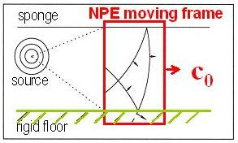

The NPE model is adapted here to simulate sound propagation in the atmosphere. The free surface and the sediment layer of the ocean waveguide are replaced respectively by a sponge layer and a rigid bottom.
Le modèle NPE est ici adapté pour simuler la propagation sonore dans l'atmosphère. La surface libre et la couche de sédiments du guide d'onde océanique sont remplacées respectivement par une couche absorbante (sponge) et un fond rigide.
NPE MODEL WITH THERMOVISCOUS ABSORPTION
MODÈLE NPE AVEC ABSORPTION THERMOVISQUEUSE
$$\frac{\partial R}{\partial t} = -\frac{\partial}{\partial x} \left( c_0 R + \frac{\beta}{2 \rho_0 c_0} R^2 \right) - \frac{c_0}{2} \int \nabla^2_\perp R \, dx + \frac{\delta}{2 \rho_0 c_0^3} \frac{\partial^2 R}{\partial x^2}$$
Fig. 6: Schematic representation of the NPE moving frame for outdoor propagation Fig. 6 : Représentation schématique du repère mobile NPE pour la propagation extérieure